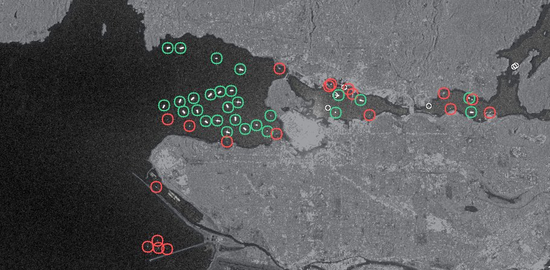
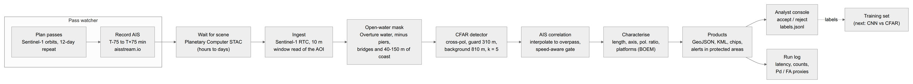
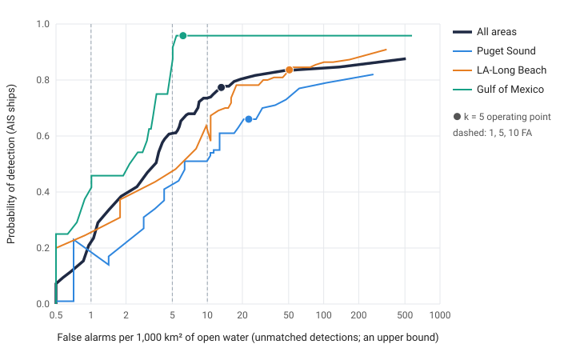
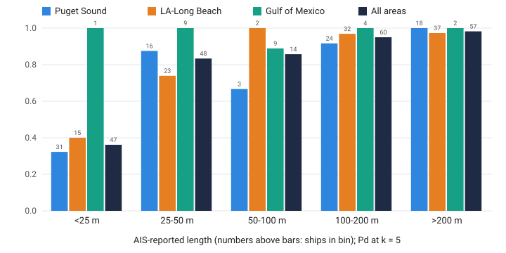
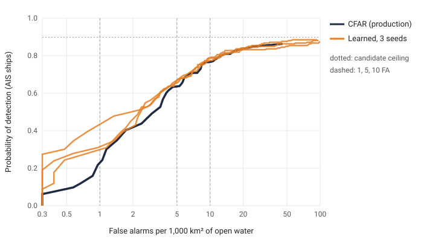
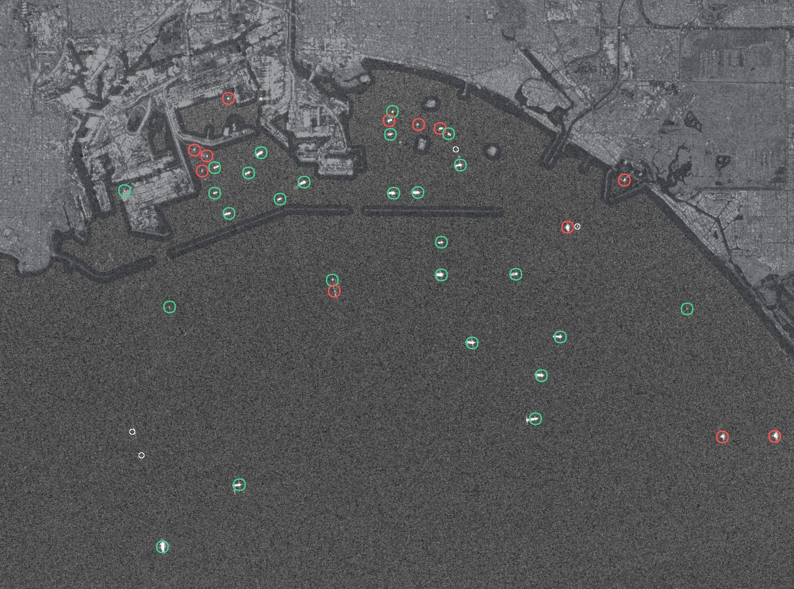
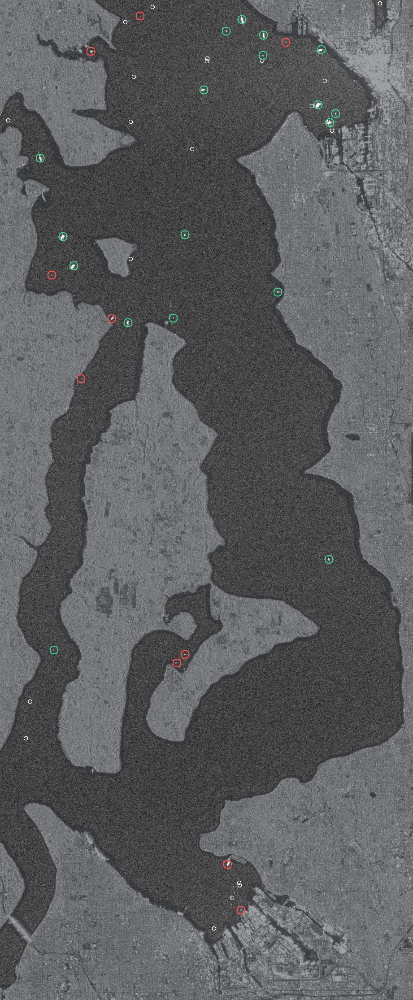
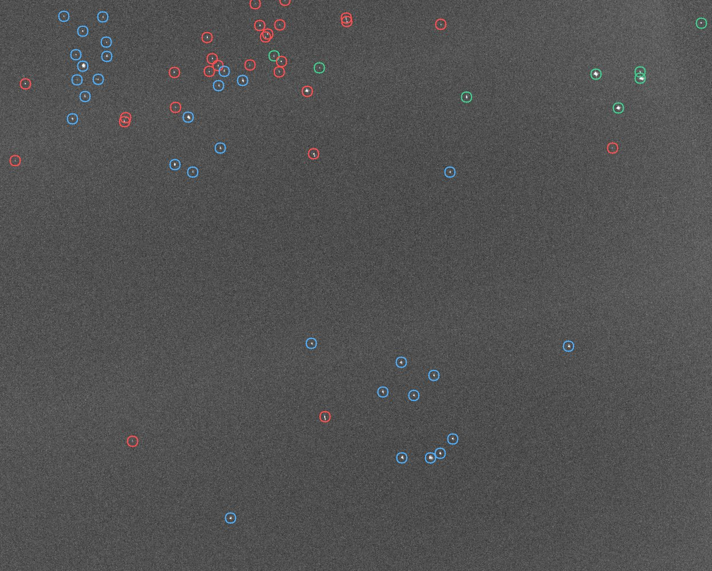
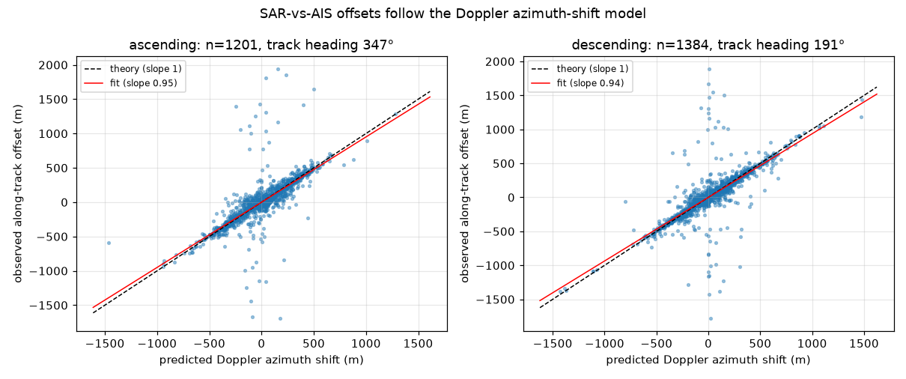
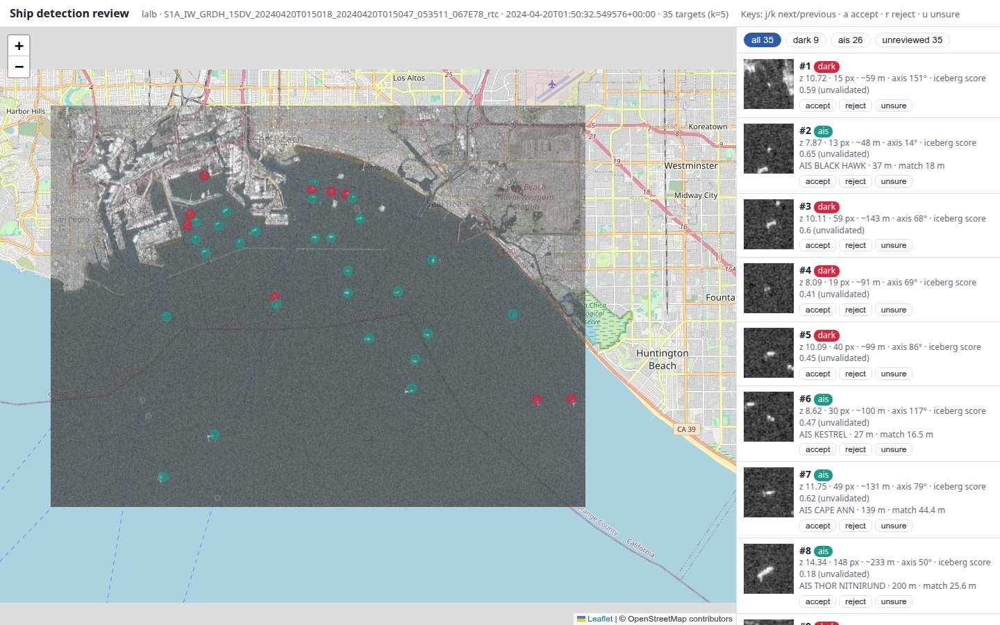

Latest live pass

A target with no AIS match is not necessarily a vessel hiding: it can be a boat too small to need AIS, a buoy, a structure missing from the map, or a false alarm. On the 2024 passes, where every result was checked, the same setting gave 13 unmatched targets per 1,000 km²; here it is 77, in a busy harbour. St. John's harbour is next: Mon 26 Oct 07:11 NDT, the first St. John's pass with AIS recorded around it.
What runs
- PlanPredict Sentinel-1 overpasses of each harbour from the 12-day orbit repeat.
- Record AISRecord live AIS from 75 min before to 75 min after each pass (systemd timer).
- Wait for the scenePoll the Planetary Computer STAC catalogue until the scene is published.
- IngestRead only the harbour window of the terrain-corrected Sentinel-1 scene (10 m).
- Mask landOpen water from Overture/OSM, minus piers and bridges, and a coastal buffer.
- DetectTwo-parameter CFAR on cross-pol backscatter; fragments within 100 m merged.
- CorrelateAIS interpolated to the overpass; match region stretched along the track by each ship's expected azimuth shift.
- CharacteriseLength and axis from the blob, polarisation ratio, platforms flagged (BOEM).
- ProductsGeoJSON, KML, image chips, alerts for dark targets in protected areas.
- ReviewAnalyst console: accept or reject each target; decisions saved as labels.

Validation: 2024 Sentinel-1 passes with NOAA AIS
Twelve passes from 2024 over three busy US areas, four per area, spread over the year and over ascending and descending orbits. The truth is NOAA MarineCadastre AIS, interpolated to each overpass. Only vessels on open water at least 150 m from the mapped coast are scored. The radar detector is the two-parameter CFAR baseline that later models must beat.
| Area | Passes | AIS ships | Open water km² | Pd at 1 FA | Pd at 5 FA | Pd at 10 FA | Pd at k = 5 | Pd by chance at k = 5 | FA per 1,000 km² at k = 5 | Unmatched (dark candidates) | At platforms (excluded) |
|---|---|---|---|---|---|---|---|---|---|---|---|
| All areas | 12 | 234 | 10,469 | 0.21 | 0.61 | 0.74 | 0.77 | 0.05 | 13.2 | 138 | 120 |
| Puget Sound | 4 | 100 | 1,412 | 0.23 | 0.41 | 0.51 | 0.66 | 0.04 | 22.7 | 32 | 0 |
| LA–Long Beach | 4 | 110 | 1,125 | 0.25 | 0.44 | 0.64 | 0.84 | 0.06 | 50.7 | 57 | 0 |
| Gulf of Mexico | 4 | 24 | 7,933 | 0.38 | 0.75 | 0.96 | 0.96 | 0.01 | 6.2 | 49 | 120 |
Pd: share of AIS ships on open water that a detection matched. FA: detections that no AIS ship accounts for, per 1,000 km² of open water. Those include vessels without AIS, so the rate is an upper bound on false alarms. Detections within 150 m of a standing BOEM platform are counted separately and not scored.


Pd by length
| Area | <25 m | 25-50 m | 50-100 m | 100-200 m | >200 m |
|---|---|---|---|---|---|
| All areas | 0.35 (18/52) | 0.80 (39/49) | 0.86 (12/14) | 0.93 (56/60) | 0.95 (56/59) |
| Puget Sound | 0.31 (11/36) | 0.78 (14/18) | 0.67 (2/3) | 0.88 (21/24) | 0.95 (18/19) |
| LA–Long Beach | 0.40 (6/15) | 0.74 (17/23) | 1.00 (2/2) | 0.97 (31/32) | 0.95 (36/38) |
| Gulf of Mexico | 1.00 (1/1) | 1.00 (8/8) | 0.89 (8/9) | 1.00 (4/4) | 1.00 (2/2) |
Position error
A moving ship appears displaced along the satellite track by about 115 s times its speed toward the radar. So stationary and moving ships are reported separately, and a detection matches an AIS ship only within 300 m of a region stretched along the track by that shift, not in a wide circle. Random detections on the same water would reach Pd 0.05 (the Pd by chance column).
| Area | Stationary ships | Error median / p90 (m) | Moving ships | Error median / p90 (m) |
|---|---|---|---|---|
| All areas | 109 | 42 / 123 | 72 | 162 / 713 |
| Puget Sound | 33 | 55 / 179 | 33 | 192 / 1,079 |
| LA–Long Beach | 68 | 32 / 98 | 24 | 198 / 409 |
| Gulf of Mexico | 8 | 78 / 155 | 15 | 103 / 997 |
What the coastal buffer changes
With Harbour Twin's original 40 m coastal buffer, most unmatched targets in Puget Sound were on the shoreline: private docks and shore returns that the map does not show (347 unmatched there, against 32 at 150 m). Pooled, the false-alarm rate at k = 5 falls from 48.5 to 13.2 per 1,000 km², and Pd at 5 FA rises from 0.50 to 0.61. The cost is that ships within 150 m of the coast are no longer tested (282 AIS ships scored at 40 m, 234 at 150 m). A detector for berths and marinas needs a better land and structure mask, not a bigger buffer.
The 150 m was picked after looking at these 12 passes, so the figures above are not independent of that choice. As a check, the buffer was chosen again on the 23 separate 2024 training passes alone (best Pd at 5 FA among 40, 75, 100, 150, 200, 300 m) and scored once on the 12 test passes. That picks 300 m, which on the test passes gives Pd at 5 FA 0.64 and 10.7 false alarms per 1,000 km² (150 m: 0.61 and 13.2), but scores only 206 of the 234 ships. So choosing 150 m on the test passes did not flatter the figures above. It also shows that Pd at a fixed false-alarm rate cannot choose the buffer on its own: Pd keeps rising as the buffer widens, partly because the ships near the coast, the hardest ones, leave the test. That is why the promotion gate below also requires nearly all ships to stay scored, and rejects 300 m.
The 12 passes
| Area | Sensing time | Orbit | AIS ships | Detections | Matched | Unmatched | At platforms |
|---|---|---|---|---|---|---|---|
| Puget Sound | 2024-02-13 02:02 UTC | ascending | 23 | 25 | 20 | 5 | 0 |
| Puget Sound | 2024-05-19 02:02 UTC | ascending | 25 | 29 | 20 | 9 | 0 |
| Puget Sound | 2024-07-18 02:02 UTC | ascending | 37 | 28 | 18 | 10 | 0 |
| Puget Sound | 2024-10-10 02:02 UTC | ascending | 15 | 16 | 8 | 8 | 0 |
| LA–Long Beach | 2024-01-03 13:53 UTC | descending | 19 | 32 | 18 | 14 | 0 |
| LA–Long Beach | 2024-04-20 01:50 UTC | ascending | 30 | 38 | 25 | 13 | 0 |
| LA–Long Beach | 2024-07-18 01:58 UTC | ascending | 34 | 40 | 28 | 12 | 0 |
| LA–Long Beach | 2024-10-10 01:58 UTC | ascending | 27 | 39 | 21 | 18 | 0 |
| Gulf of Mexico | 2024-03-22 00:02 UTC | ascending | 6 | 10 | 6 | 4 | 30 |
| Gulf of Mexico | 2024-07-08 00:02 UTC | ascending | 5 | 14 | 5 | 9 | 30 |
| Gulf of Mexico | 2024-08-01 00:02 UTC | ascending | 6 | 13 | 5 | 8 | 30 |
| Gulf of Mexico | 2024-10-12 00:02 UTC | ascending | 7 | 35 | 7 | 28 | 30 |
A learned detector against CFAR
A two-stage detector: CFAR at a low threshold proposes candidates, and a small CNN trained from scratch (no pretrained weights) scores each one from a 480 m chip of cross-pol, co-pol and the water mask. It was trained on 20 other 2024 passes over the same areas, each at least a month from any test pass, with AIS matches as labels (333 ships among 9,264 candidates). Model choice and the operating threshold used 3 further held-out passes; the 12 test passes played no part in training, model choice or the threshold, and are scored exactly like CFAR.

| Pd at | CFAR | Learned (3 seeds) |
|---|---|---|
| 1 FA per 1,000 km² | 0.21 | 0.32 ± 0.09 |
| 5 FA | 0.61 | 0.62 ± 0.02 |
| 10 FA | 0.74 | 0.75 ± 0.00 |
Where false alarms are expensive, the learned detector finds about 50% more ships than CFAR on average (Pd 0.32 ± 0.09 against 0.21 at 1 FA), though the margin varies a lot between training seeds. At looser budgets the two are level, and both are capped by the candidates. At production's own false-alarm rate (13.2 per 1,000 km²) they find the same share of ships (0.78 ± 0.01 against 0.77), and the same share of boats under 25 m (0.33 ± 0.02 against 0.35): no gain on small craft. Through the promotion gate it was rejected: its operating threshold, set on the held-out passes to match production CFAR's false-alarm rate there, gave 16.0 false alarms per 1,000 km² on the test passes against production's 13.2. CFAR stays in production; the learned model is registered as version 5 for the next round. The labels are AIS, so vessels without AIS count as false alarms in training as in scoring; 333 positive examples is a small training set.
Quality-control images
Cross-polarised backscatter with land dimmed. Rings: matched to AIS, no AIS match (dark candidate), at a BOEM platform. These are the same status colours as the Harbour Twin viewer.



The Gulf has 24 AIS ships over four passes, too few to draw conclusions about Pd there. Its unmatched targets cluster in the platform fields. Some are likely supply vessels alongside platforms, or structures more than 150 m from their listed position. They have not been reviewed.
Characterisation
Each target's length and orientation come from the second moments of its pixels. Against AIS, for the 181 matched ships that report a length, the radar length has a median bias of 9 m (sidelobes make ships look longer), a median absolute error of 16 m and a correlation of 0.84. The long axis is within 20° of the AIS heading for 77% of ships, with a median error of 4°.
| Area | Matched ships with length | Length bias (m) | Median abs. length error (m) | Relative | Correlation | Ships with heading | Median axis error | Within 20° |
|---|---|---|---|---|---|---|---|---|
| All areas | 181 | 9 | 16 | 11% | 0.84 | 174 | 4° | 77% |
| Puget Sound | 66 | 13 | 15 | 13% | 0.81 | 61 | 5° | 69% |
| LA–Long Beach | 92 | -0 | 16 | 9% | 0.87 | 90 | 3° | 88% |
| Gulf of Mexico | 23 | 26 | 29 | 94% | 0.66 | 23 | 16° | 57% |
Icebergs. For St. John's, an iceberg-versus-ship score combines the cross- to co-polarised ratio, compactness and size. It is not validated: no official iceberg sightings with clear terms overlap these scenes. On the 20 October 2026 St. John's pass it rates 8 of 12 targets ship-like and 0 iceberg-like, which is plausible in October but is not a test.
Platforms. 120 Gulf detections at k = 5 fall within 150 m of a platform standing on the scene date (BOEM). Without that list they would have counted as dark vessels.
Second study: Danish waters at scale
A larger study, built the same month, uses the Danish Maritime Authority's complete AIS feed: 72 Sentinel-1 frames over the Danish straits, 62 over the Danish North Sea, and 94 frames from May 2026 held out until every setting was frozen. Intervals are 95% bootstraps that resample whole Sentinel-1 passes.
Matching that follows the radar physics

Correcting for the shift cuts the median SAR–AIS offset from about 207 m to 65 m on ascending passes and from 200 m to 60 m on descending ones. The match gate in the US validation above uses the same geometry.
Bright fixed structures next to a ship can steal its AIS match. In an injection test with known truth, a cost penalty for detections at mapped structures and recurring sites cut stolen matches from 20% to 3%, with no loss of recall.
Detect on cross-polarisation
Across 70 autumn frames, detecting on VH instead of VV halves the unmatched list, from 27.1 to 13.6 per 1,000 km² (difference -13.5, interval -20.9 to -7.0), at similar recall (80.4% against 79.8%), counted before any static-structure filter. On the windiest winter passes (median wind 10 m/s) the gap is larger: 13.5 against 63.4. Sea clutter is far weaker in cross-pol than ship returns.
Three regions and seasons
| Region | Frames | Open water km² | AIS vessels | Recall, all | Under 15 m | 30–60 m | Over 60 m | Unmatched per 1,000 km², raw |
|---|---|---|---|---|---|---|---|---|
| Danish straits, Sep–Oct 2026 | 72 | 355k | 3,646 | 81% [76%, 84%] | 47% [38%, 56%] | 89% [84%, 93%] | 89% [84%, 92%] | 13.6 |
| Danish North Sea, Sep–Oct 2026 | 62 | 297k | 838 | 92% [88%, 94%] | 59% [41%, 74%] | 98% [95%, 100%] | 94% [89%, 97%] | 36.0 |
| Danish straits, May 2026 (held out) | 94 | 402k | 4,412 | 72% [68%, 75%] | 40% [36%, 44%] | 86% [81%, 90%] | 86% [82%, 90%] | 22.6 |
The CFAR detector and every threshold were frozen before May was processed. May recall is lower mainly because the leisure season doubles the number of small vessels carrying AIS. The North Sea's denser unmatched list comes from sidelobes around the Horns Rev wind turbines and from the Wadden Sea tidal flats. A persistence filter removes recurring sites. The operational contact layer, which links unmatched detections across passes and ranks them, raises about 21 alerts per acquisition day in the straits (1.6 per 1,000 km² per day).
Geospatial foundation models: vessel type and length from radar chips
2,739 Sentinel-1 chips of AIS-matched vessels, labelled by AIS as cargo, tanker, passenger, fishing, service or small craft. Five-fold cross-validation grouped by vessel (MMSI), so no ship appears in both training and test.
| Model | Vessel type, macro-F1 (6 classes) | Length error (MAE) |
|---|---|---|
| ResNet-50, Sentinel-1 SoftCon (SSL4EO-S12), fine-tuned | 0.52 ± 0.04 | 21 m |
| ResNet-50, Sentinel-1 MoCo (SSL4EO-S12), fine-tuned | 0.49 ± 0.04 | 19 m |
| ResNet-50, ImageNet, fine-tuned | 0.48 ± 0.03 | 21 m |
| ViT-S/16, Sentinel-1 MAE (SSL4EO-S12), fine-tuned | 0.43 ± 0.04 | 22 m |
| ResNet-50, ImageNet, frozen | 0.40 ± 0.01 | 24 m |
| Gradient boosting on hand-crafted chip features | 0.38 ± 0.03 | 22 m |
| ResNet-50, Sentinel-1 SoftCon, frozen | 0.31 ± 0.03 | 27 m |
| CFAR blob length / majority class | 0.09 | 44 m |
Fine-tuned, the Sentinel-1 ResNet backbones lead, narrowly: SoftCon's margin over ImageNet is within one standard deviation across folds. Every learned model estimates length better than the CFAR blob (19–27 m against 44 m). Frozen, the same Sentinel-1 features are the weakest, below frozen ImageNet. Their pretraining corpus is mostly land, so here their value is as an initialisation, not as off-the-shelf embeddings. On thermal-noise-subtracted VH chips, which match how that corpus was processed, fine-tuned SoftCon reaches 0.55 ± 0.05.
Learned ship detectors from that study are not reported here. They will be retrained from AIS-labelled Sentinel-1 only (next steps).
Analyst console

Live operation
The same code runs as a service for Vancouver and St. John's harbours. Timers record AIS around each pass, and a processor checks every 6 hours for newly published scenes. For each pass it writes products, alerts and a run-log line with the time from sensing to report. Upcoming passes:
- Vancouver harbour: Sat 24 Oct 23:32 NDT (02:02 UTC), Sentinel-1C, relative orbit 137
- St. John's harbour: Mon 26 Oct 07:11 NDT (09:41 UTC), Sentinel-1C, relative orbit 156
- St. John's harbour: Tue 27 Oct 07:03 NDT (09:33 UTC), Sentinel-1D, relative orbit 83
- St. John's harbour: Wed 28 Oct 18:51 NDT (21:21 UTC), Sentinel-1D, relative orbit 105
Latency today is dominated by the data source. Planetary Computer publishes terrain-corrected Sentinel-1 hours to days after sensing. For near-real-time use the same pipeline would read Copernicus NRT products or a commercial feed, where detection itself takes seconds (about 5 s for a 300 km² harbour; the 52 s above includes reading the scene).
How a change reaches the live service
Every validation run is tracked in MLflow with the detector settings, the operating metrics, the results files and the git commit. Each detector configuration is registered as a version of one model, loadable and runnable from the registry. A version becomes production only through a gate: Pd at 5 FA may not drop by more than 0.02, false alarms may not rise by more than 10%, at least 95% of the ships must still be scored (a wider mask must not buy Pd by testing less), and Pd by chance must stay under 0.06. Promotion writes the production settings to a file the live service reads, and every processed pass records the version that produced it. The decisions so far, replayed through the gate:
| Version | Detector | Coastal buffer | Pd at 5 FA | FA at k = 5 | Ships scored | Pd by chance | Decision | Gate |
|---|---|---|---|---|---|---|---|---|
| 1 | CFAR | 40 m | 0.50 | 48.5 | 282 | 0.09 | superseded | first production version |
| 2 | CFAR | 150 m | 0.61 | 13.2 | 234 | 0.05 | production | scores 83% of the ships (rule: at least 95%); approved anyway: the ships no longer scored lie within 150 m of the coast, where most unmatched targets at 40 m were docks and shore returns |
| 3 | CFAR | 75 m | 0.61 | 20.1 | 254 | 0.05 | rejected | false alarms +53% (rule: at most +10%) |
| 4 | CFAR | 300 m | 0.64 | 10.7 | 206 | 0.04 | rejected | scores 88% of the ships (rule: at least 95%) |
| 5 | learned | 150 m | 0.63 | 14.9 | 234 | 0.05 | rejected | false alarms +13% (rule: at most +10%); the live service cannot run this detector type yet |
Unit tests, including the gate and a registry round trip, run in CI on every change (Python 3.11 and 3.12). The full validation needs the Sentinel-1 cases and runs locally before a candidate is registered. CFAR has no weights to retrain; the same registry and gate are where a learned detector would be versioned, retrained and promoted.
Limits
- AIS is incomplete truth. Vessels without AIS make some "false alarms" real ships, and AIS position errors and fix gaps can break a true match.
- Small craft. At 10 m pixels, boats under 25 m are often missed. That is a sensor limit as much as a detector one.
- Near the coast. Ships within 150 m of the mapped coast (berths, marinas) are outside the scored area.
- Sample size. 12 passes and 234 ships give useful but wide uncertainty, especially in the Gulf (24 ships).
- Baseline detector. Detection numbers are for CFAR. No learned ship detector is claimed yet; the learned models shown are vessel type and length classifiers.
Next steps
- Learned detector, round two. More AIS-labelled passes, analyst decisions from the console as cleaner labels, and a full-image detector so recall is not capped by the CFAR candidates. No China-origin datasets or models are used.
- Discrimination. Platforms and fixed structures, azimuth ambiguities and sidelobes; iceberg-versus-ship with labelled icebergs.
- Faster data. Near-real-time Sentinel-1 for the live harbours, with latency reported from sensing to alert.
Related work
The harbour side of this work is Harbour Twin, a 3D digital twin of Vancouver and St. John's harbours built from public data (source). It has the first version of this ship detector, and each pass here can also be written in its viewer's format.
Data and licences
- Contains modified Copernicus Sentinel data (2024, 2026), terrain-corrected Sentinel-1 (RTC) via Microsoft Planetary Computer.
- AIS 2024: Martin, Brass, Dornback and Fontenault (2025), Nationwide Automatic Identification System 2024, NOAA Office for Coastal Management (MarineCadastre), CC0 1.0. Live AIS: aisstream.io.
- Water, piers and bridges: Overture Maps Foundation (includes OpenStreetMap data, ODbL).
- Danish study: AIS from the Danish Maritime Authority; structures from OpenStreetMap (ODbL); winter wind from ERA5 via Open-Meteo (CC BY 4.0); Sentinel-1 backbones from SSL4EO-S12 via TorchGeo.
- Offshore platforms: BOEM Platform Structures (data.boem.gov), U.S. Government data.
- Protected areas for alerts: Canadian Protected and Conserved Areas Database (ECCC). Contains information licensed under the Open Government Licence – Canada.